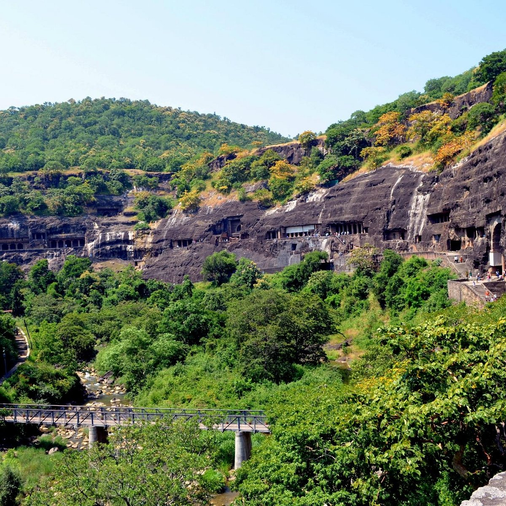
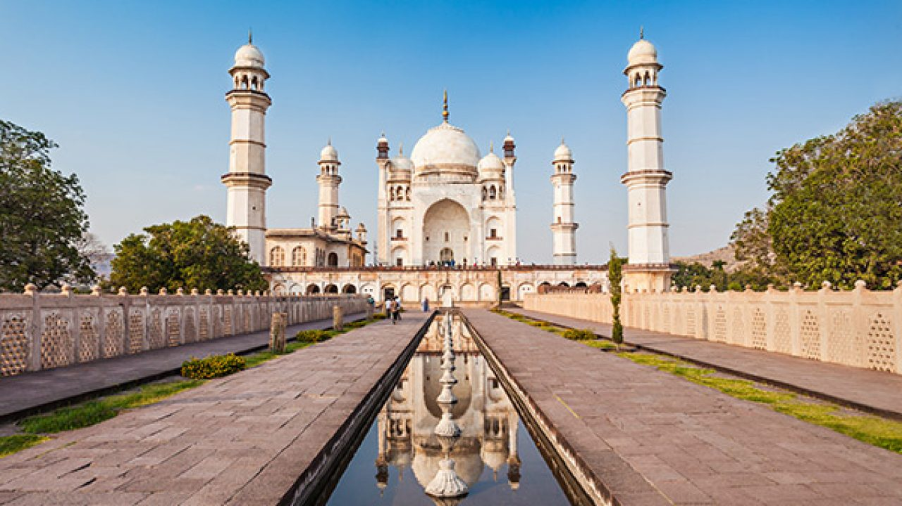
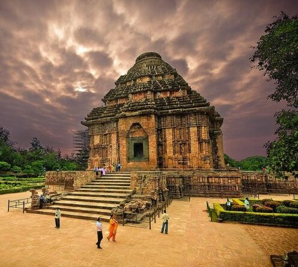
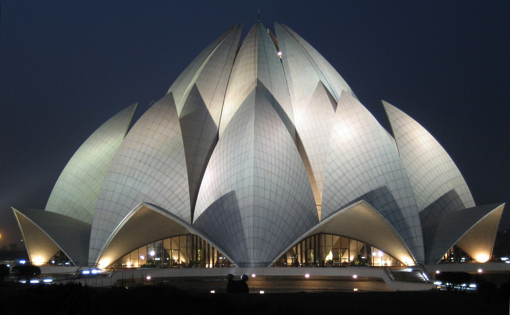
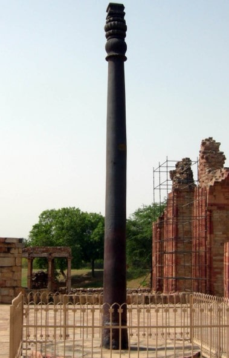
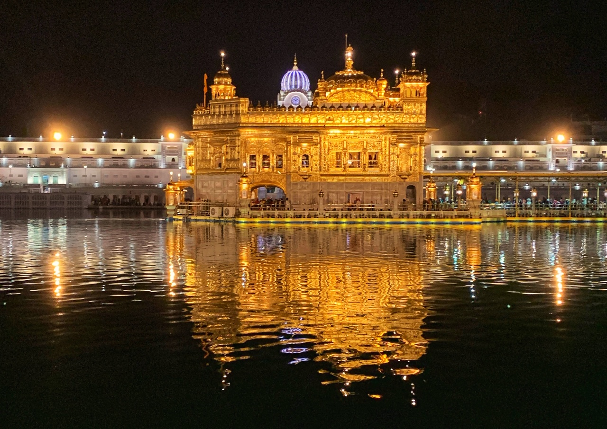

INCREDIBLE INDIA

Ajanta Caves
The Ajanta Caves are 29 rock-cut Buddhist cave monuments dating from the second century BCE to about 480 CE in the Aurangabad District of Maharashtra state in India.[1][2][3] Ajanta Caves are a UNESCO World Heritage Site.[2] Universally regarded as masterpieces of Buddhist religious art, the caves include paintings and rock-cut sculptures described as among the finest surviving examples of ancient Indian art, particularly expressive paintings that present emotions through gesture, pose and form.[4][5][6]The caves were built in two phases, the first starting around the second century BCE and the second occurring from 400 to 650 CE, according to older accounts, or in a brief period of 460–480 CE according to later scholarship.[7]The Ajanta Caves constitute ancient monasteries (Chaityas) and worship-halls (Viharas) of different Buddhist traditions caretres (65 miles) from the city of Aurangabad, and 350 kilometres (220 miles) east-northeast of Mumbai.[8][20] Ajanta is 100 kilometres (62 miles) from the Ellora Caves, which contain Hindu, Jain and Buddhist caves, the last dating from a period similar to Ajanta. The Ajanta style is also found in the Ellora Caves and other sites such as the Elephanta Caves, Aurangabad Caves, Shivleni Caves and the cave temples of Karnataka.[21]

Bibi Ka Maqbara
The Bibi Ka Maqbara (English: "Tomb of the Lady"[1][2]) is a tomb located in Aurangabad, Maharashtra, India. It was commissioned in 1660 by the Mughal emperor Aurangzeb's son prince Azim Shah in the memory of his loving mother Dilras Banu Begum (posthumously known as Rabia-ul-Durrani).[3][4][5] It bears a striking resemblance to the Taj Mahal, the mausoleum of Aurangzeb's mother, Mumtaz Mahal.[6] Aurangzeb was not much interested in architecture though he had commissioned the small, but elegant, Pearl Mosque at Delhi. Bibi Ka Maqbara is the second largest structure that Aurangzeb has built the son of Ustad Ahmad Lahauri, the principal designer of the Taj Mahal.[12] Aurangzeb's son, Muhammad Azam Shah was in later years put in charge of overseeing the repair-work of the mausoleum by Shah Jahan.
History :
The tomb in the 1880sDilras Banu Begum was born a princess of the prominent Safavid dynasty of Iran (Persia)[13] and was the daughter of Mirza Badi-uz-Zaman Safavi (titled Shahnawaz Khan),[14] who was the viceroy of Gujarat.[15] She married Prince Muhi-ud-din (later known as Aurangzeb upon his accession) on 8 May 1637 in Agra.[16] Dilras was his first wife and chief consort, as son and the prince soon became his best-loved son.[22]In 1660, Aurangzeb commissioned a mausoleum at Aurangabad to act as Dilras' final resting place, known as Bibi Ka Maqbara ("Tomb of the Lady"). Here, Dilras was buried unders the largest structure that Aurangzeb had to his credit and bears a striking resemblance to the Taj Mahal, the mausoleum of Dilras' mother-in-law, Empress Mumtaz Mahal, who herself died in childbirth. Aurangzeb, himself, is buried a few kilometers away from her mausoleum in Khuldabad.

Charminar
The Charminar (lit. 'four minarets') is a monument located in Hyderabad, Telangana, India. Constructed in 1591, the landmark is a symbol of Hyderabad and officially incorporated in the emblem of Telangana.[3] The Charminar's long history includes the existence of a mosque on its top floor for more than 425 years. While both historically and religiously significant, it is also known for its popular and busy local markets surrounding the structure, and has become one of the most frequented tourist attractions in Hyderabad. Charminar is also a site of numerous festival celebrations, such as Eid-ul-adha and Eid al-Fitr,[4] as it is adjacent to the city's main mosque, the Makkah Masjid.The Charminar is situated on the east bank of Musi
History
The fifth ruler of the Qutb Shahi dynasty, Muhammad Quli Qutb Shah, built the Charminar in 1591 after shifting his capital from Golconda to the newly formed city of Hyderabad.Charminar, Char Kaman and Gulzar Houz, photographed by Lala Deen Dayal in the 1880sThe Archaeological Survey of India (ASI), the current caretaker of the structure, mentions in its records, "There are various theories regarding the purpose for which Charminar was constructed. However, it is widely accepted that Charminar

India Gate
The India Gate (formerly known as the All India War Memorial) is a war memorial located near the Kartavya path on the eastern edge of the "ceremonial axis" of New Delhi, formerly called duty path. It stands as a memorial to 84,000 soldiers of the British Indian Army who died between 1914 and 1921 in the First World War, in France, Flanders, Mesopotamia, Persia, East Africa, Gallipoli and elsewhere in the Near and the Far East, and the Third Anglo-Afghan War. 13,300 servicemen's names, including some soldiers and officers from the United Kingdom, are inscribed on the gate.[2] Designed by Sir Edwin Lutyens, tships with similar fortitude and "no less valor".[4] The Duke also read out a message by the King, which said, "On this spot, in the central vista of the Capital of India, there will stand a Memorial Archway, designed to keep", in the thoughts of future generations, "the glorious sacrifice of the officers and men of the British Indian Army who fought and fell". During the ceremony, the Deccan Horse, 3rd Sappers and Miners, 6th Jat Light Infantry, 34th Sikh Pioneers, 39th Garhwal Rifles, 59th Scinde Rifles (Frontier Force), 117th Mahrattas, and 5th Gurkha Rifles

Gateway of India
The Gateway of India is an arch-monument built in the early 20th century in the city of Mumbai (Bombay), India. It was erected to commemorate the landing of King-Emperor George V, the first British monarch to visit India, in December 1911 at Strand Road near Wellington Fountain.The foundation stone was laid in March 1913 for a monument built in the Indo-Islamic style, insp local Jewish community as it has been the spot for Hanukkah celebrations, with the lighting of the menot proposed a four-step plan to develop the location for the convenience of tourists, following a direction issued by the state governor in February 2019.
History :
The Gateway, in 1924Departure of the last British troops from the Gateway, in 1948The Gateway of India was built to commemor the city of Mumbai.[21][22][F] Since its construction, the gateway has remained amongst the first structures visible to visitors arriving in Bombay by the sea.[25][H]

Konark Sun Temple
Konark Sun Temple is a 13th-century CE (year 1250) Sun temple at Konark about 35 kilometres (22 mi) northeast from Puri city on the coastline in Puri district, Odisha, India.[1][2] The temple is attributed to king Narasimhadeva I of the Eastern Ganga dynasty about 1250 CE.[3][4]Dedicated to the Hindu Sun God Surya, what remains of the temple complex has the appearance of a 100-foot (30 m) high chariot with immense wheels and horses, all carved from stone. Once over 200 feet (6mith's Folly" is a remnant of the tower's 19th century restoratione Viscount Hardinge, who was the Governor General of India. at the time. It was reinstalled at ground level to the east of Qutb Minar, where it remains. This is known as "Smith's Folly".[19]It was added to the list of World Heritage Site by UNESCO in 1993.

Lotus Temple
The Lotus Temple, located in New Delhi, India. Is a Bahá'iʼ house of worship that was dedicated in December 1986. Notable for its lotus-like shape, it has become a prominent attraction in the city. Like all Bahá'i houses of worship, the Lotus Temple is open to all, regardless of religion or any other qualification. The building is composed of 27 free-standing marble-clad "petal 34 meters[1] and a capacity of 1,300 people.[2] The Lotus Temple has won numerous architectural awards[3][4] and has been featured in many newspaper and magazine articles.[5]
History
The architect of the Lotus Temple was an Iranian, Fariborz Sahba who now lives in La Jolla, California,[6] after spending some years in Canada.[7] He was approached in 1976 to design the Lotus Temple and later oversaw its construction. The structural design was undertaken by the UK firm Flint and Neill over the course of 18 months,[8] and the construction a gemple was opened to the public on January 1, 1987,and more than 10,000 people visited that day.[15]

Iron Pillar
The iron pillar of Delhi is a structure 7.21 metres (23 feet 8 inches) high with a 41-centimetre (16 in) diameter that was constructed by Chandragupta II (reigned c. 375–415 AD), and now stands in the Qutb complex at Mehrauli in Delhi, India.[1][2] It is famous for the rust-resistant composition of the metals used in its construction. The pillar weighs moreht of trn capital is 306 mm (12 in). It is estimated to weigh more than six tonnes (13,228 lb).[4] The pillar has attracted high level of skill achieved by the ancient Indian iron smiths in the extraction and processing of iron".[5][6] The corrosion resistance results from an even layer of

Golden Temple
The Golden Temple (also known as the Harmandir Sahib, lit. 'abode of God', Punjabi pronunciation: [ɦəɾᵊmən̪d̪əɾᵊ saːɦ(ɪ)bᵊ], or the Darbār Sahib, 'exalted court', [d̪əɾᵊbaːɾᵊ saːɦ(ɪ)bᵊ][2]) is a gurdwara located in the city of Amritsar, Punjab, India.[3][4] It is the preeminent spiritual site of Sikhism. It is one of the holiest sites in Sikhism, alongside the Gurdwara Darbar Sahib Kartarpur in Kartarpur, and Gurdwara Janam Asthan in Nankana Sahib.[3][5]The man-made pool on the site of the ta collection of buildings around the sanctum and the pool.[3] One of these is Akal Takht, the chief centre of religious community-run kitchen that offers a vegetarian meal to all visitors without discrimination.[5] Over 150,000 people visit the holy shrine everyday for worship.[15] The Gurdwara complex has been nominated as a UNESCO World Heritage Site, and its application is pending on the tentative list of UNESCO.[16]